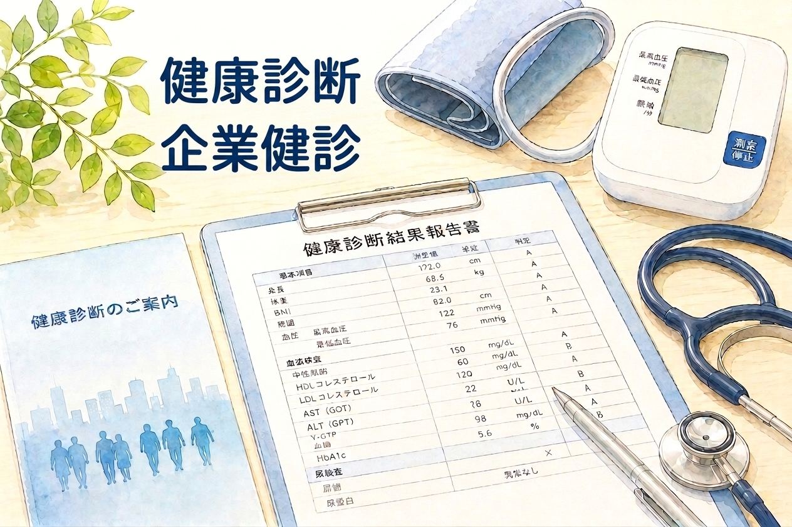
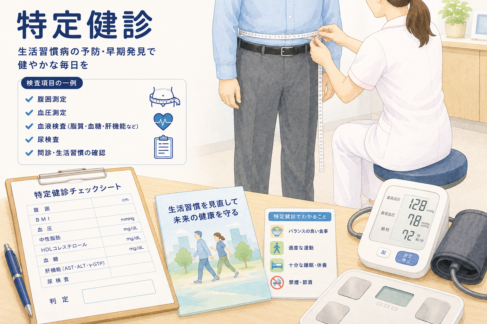

《要予約》お電話でご予約のうえご来院ください。

個人で受診される方
ご自身の健康管理や、進学・就職などで提出が必要な健康診断を承っております。特殊な検査項目についても、当院にて検査できるものであれば対応いたしますのでご相談ください。検査内容により料金が異なりますので、あらかじめお電話にてお問い合わせいただき、ご予約のうえご来院ください。所定の提出書類があれば、お持ちください。
健康診断料金
| 一般健康診断料 | ¥9,800 |
【オプション・セット検査料金】
| セット名 | 内容 | 料金 |
|---|---|---|
| 上腹部エコー検査セット | 腹部エコー＋腫瘍マーカー3項目（血液検査） | 12,100円 |
| 下腹部エコー検査セット | 男性：腹部エコー（膀胱、前立腺）＋腫瘍マーカー2項目＋尿検査 女性：腹部エコー（膀胱、子宮、卵巣）＋腫瘍マーカー2項目＋尿検査 |
9,900円 |
| 甲状腺セット | 甲状腺エコー＋甲状腺ホルモン検査（血液検査） | 7,700円 |
| 簡易動脈硬化セット | 頸部・血管超音波検査＋動脈硬化血液検査 | 7,700円 |
| 肺呼吸機能検査セット | 胸部X線検査＋呼吸機能検査＋腫瘍マーカー2項目 | 8,800円 |
※上記は、オプションセット検査単独での通常料金（税込）となります。特定健診、健康診断など他の検査と組み合わせの場合は、セット料金がございますのでお問い合わせください。
事業者様（企業検診）
「定期健康診断」や「雇入時健康診断」など、事業者様に義務付けられた健診に、日本医師会認定産業医が対応いたします。従業員さまの健診をまとめて手配したい事業主様のご相談を承ります（定期健康診断、雇入時の健康診断など）。従業員様の人数に合わせた一括ご予約・日程調整をいたします。
※インフルエンザワクチンなど、従業員さまの予防接種も承っております。
健診で「要検査」などの指摘を受けた方は、こちらもご覧ください。

特定健診・健康診査は、生活習慣病の予防・早期発見のための健康診断です。加入している健康保険（保険者）によって、受診券・受診票、自己負担額が異なります。ご希望の方は、お電話でご予約をお願いいたします。
② 特定健診（40〜74歳）
- 福岡市国保以外の健康保険の方（協会けんぽ・健康保険組合・共済組合など）
- 料金：保険者および検診内容によって異なります
- 必要書類：特定健康診査受診券（セット券）、マイナ保険証等による資格確認 ※保険者によって受診券は異なります